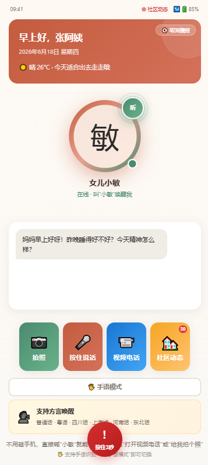
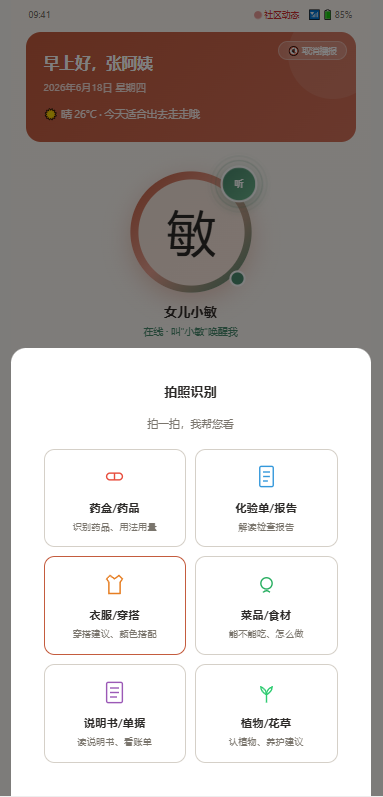
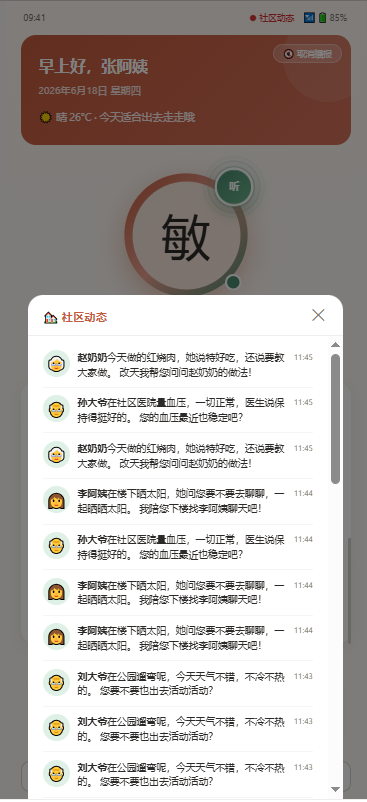

社会服务赛道 + 亲伴AI
亲伴AI是一款面向老年人群的陪伴式AI产品，产品形态为 HTML5 交互式 Demo（未来将覆盖 App + 小程序 + 实体机器人 三端）。Demo 通过单一 HTML 文件完整呈现了父母端和子女端的核心交互流程。
核心用户：60岁以上独居/半独居老人（中国现有 3亿+）
延伸用户：老人的子女（25-50岁，异地工作，无法日常陪伴）
核心痛点：独居老人平均倒地发现时间 6小时，日常陪伴严重缺失，用药安全无人把关
上传照片+语音，AI克隆子女形象与声音，替代子女与父母日常对话
拍药盒识别药品、拍化验单解读报告、拍衣服推荐穿搭、拍菜品分析营养
方言语音唤醒（普通话+6种方言），按住说话，AI语音回复自动播放
长按3秒SOS / 语音呼救 → 自动拨打120 → 播报预填信息 → 通知子女
CSS手势动画+文字+语音三通道输出，支持6种手势动作，服务听障老人
自动推送邻居动态（王奶奶买菜、刘大爷遛弯），点击独立信息模块查看
说"别播了"/"够了"即可取消播报，再点击恢复，老人自主控制信息流
持续记录老人健康、用药、偏好、社交关系，构建个性化记忆图谱

2025年，中国60岁以上人口已突破 3亿，其中独居和空巢老人占比超过50%。我的外婆今年78岁，独自住在老家，母亲每天要打两通电话确认她安好。有一次外婆在厨房滑倒，将近4个小时后才被邻居发现——这件事让我深刻意识到：电话陪伴远远不够，老人需要的是随时在线、能主动发现异常的守护者。
AI陪伴市场预计2026年达到 794亿元，但现有产品大多面向年轻人。老年人市场存在巨大的供给缺口——他们需要的不是"更智能"，而是"更简单、更温暖、更可靠"。亲伴AI的核心理念是：不是替代子女的陪伴，而是让子女以另一种形式"在场"。通过AI数字分身，让父母感受到子女就在身边；通过拍照识别和语音交互，让老人用最自然的方式获取帮助；通过SOS闭环，让安全守护永不掉线。
本 Demo 为 交互式 HTML 文件（单文件，无需安装任何依赖），可直接在浏览器中打开体验。
体验步骤：
qinban-demo.html 文件Demo 文件：qinban-demo.html（已随文档一同提交）


亲伴AI Demo 的 100% 代码均由 TRAE 辅助完成。从最初的 HTML 页面搭建、CSS 样式设计，到复杂的 JavaScript 交互逻辑（语音合成、拍照识别分类、SOS 长按计时、手语动画、社区动态推送），全程通过 TRAE 对话式开发完成。
| 步骤 | 任务 | TRAE 能力使用 | 关键 Prompt |
|---|---|---|---|
| 1 | 搭建整体页面结构（首页 + 父母端 + 子女端） | 代码生成、多页面切换逻辑 | "创建一个老年陪伴AI产品的Demo页面，包含首页、父母端、子女端三个Tab" |
| 2 | 实现拍照识别6分类模态框 | 模态框UI设计、事件处理 | "拍照按钮点击后弹出6个选项：药盒、化验单、衣服、菜品、说明书、植物" |
| 3 | 实现语音交互（按住说话+语音合成播报） | Web Speech API集成、动画联动 | "实现按住说话功能，模拟语音识别后自动TTS播报回复" |
| 4 | 实现SOS长按3秒紧急按钮 | SVG环形进度条、触摸事件处理 | "SOS按钮需要按住3秒才能触发，用SVG画环形进度条" |
| 5 | 实现手语模式（CSS手势动画） | CSS keyframes动画、关键词匹配 | "添加手语模式，用CSS绘制手掌动画，支持6种手势动作" |
| 6 | 实现社区动态独立信息模块 | 定时推送机制、面板展开/收起 | "把社区动态放到独立信息模块，老人点击后再显示，不要和主页信息混合" |
| 7 | Bug修复：模态框类名不一致、parentWaves缺失 | 浏览器调试、DOM检查 | "拍照按钮点击后模态框不显示，请检查并修复" |
| 8 | 生成项目提交文档 | 文档撰写、存储容量分析 | "按照这个格式给我生成需要的文档" |
以下 Session ID 记录了亲伴AI Demo 的核心开发过程：
（注：实际 Session ID 请从 TRAE 工作区历史记录中获取并填入）
亲伴AI的核心竞争力之一是持续学习与记忆能力——AI不是一次性问答工具，而是随着与老人的互动不断积累认知，变得越来越"懂"这位老人。以下从记忆维度、存储容量、付费模式三个维度进行分析。
| 记忆维度 | 记录内容 | 更新频率 | 应用场景 |
|---|---|---|---|
| 🏥 健康档案 | 慢性病史、血压/血糖趋势、过敏药物、手术史、体检报告摘要 | 每次测量/问诊后 | 用药提醒、健康预警、就医建议 |
| 💊 用药记录 | 当前服用药品清单、剂量、时间、依从性记录、药品相互作用提醒 | 每日 | 按时提醒、漏服检测、药盒拍照识别 |
| 🍽️ 生活习惯 | 作息时间、饮食偏好、运动频率、看电视/听广播时间、外出规律 | 每日 | 个性化问候时机、异常行为检测 |
| 👥 社交关系 | 家庭成员、邻居朋友、常联系的人、社区活动参与记录 | 每周 | 社区动态推送、社交活跃度评估 |
| ❤️ 兴趣爱好 | 喜欢的电视节目、音乐类型、书籍、手工活动、话题偏好 | 每月 | 话题引导、内容推荐、情绪调节 |
| 😊 情感状态 | 情绪波动记录、孤独感评分、焦虑/抑郁倾向、积极事件记忆 | 每日 | 情绪预警、子女提醒、心理关怀 |
| 📝 对话历史 | 每日对话摘要（非原始录音）、关键事件标记、老人主动提及的话题 | 实时 | 上下文连贯对话、避免重复提问 |
以下基于每位老人使用一年的典型场景进行存储容量估算：
| 数据类型 | 估算依据 | 年数据量 | 年存储量 |
|---|---|---|---|
| 对话文本摘要 | 每天约10轮对话，每轮摘要约300字（UTF-8） | 约 1,095,000 字 | ~2.1 MB |
| 健康档案数据 | 结构化JSON：血压/血糖/心率等指标，每天3条记录 | 约 1,095 条 | ~5 MB |
| 用药记录 | 每药品约200B，老人平均服用4-6种药 | 约 2,190 条 | ~3 MB |
| 情感/行为分析 | 每日情绪标签+行为统计，结构化存储 | 约 365 条 | ~1 MB |
| 社交关系图谱 | 节点+边数据，约20-50个联系人 | 静态+增量 | ~2 MB |
| AI模型嵌入向量 | 老人个性化偏好向量，用于检索增强生成（RAG） | 静态 | ~50 MB |
| 照片缩略图 | 每周约5张拍照识别图片，压缩后约200KB/张 | 约 260 张 | ~52 MB |
| 语音交互记录（可选） | 每天约5分钟语音，16kbps压缩 | 约 1,825 分钟 | ~220 MB |
| 合计（基础版） | 不含语音记录 | — | ~115 MB/年 |
| 合计（完整版） | 含语音+原始照片 | — | ~350 MB/年 |
关键发现：每位老人每年的核心数据存储需求仅为 115-350 MB。即使按10年使用周期计算，总存储量也仅为 1.2-3.5 GB。这意味着云端存储成本极低（按阿里云OSS标准，约0.01元/GB/月），为付费模式设计提供了极大的灵活性。
基于存储成本分析，亲伴AI可设计三级付费体系：
| 技术模块 | 实现方式 | 成熟度 |
|---|---|---|
| 短期记忆 | 对话上下文窗口（LLM原生支持），保留最近N轮对话 | ✅ 成熟 |
| 长期记忆 | 向量数据库（如Milvus/Pinecone）+ RAG检索增强生成，将历史对话摘要嵌入向量空间 | ✅ 成熟 |
| 结构化档案 | 关系型数据库存储健康、用药、偏好等结构化数据，定期更新 | ✅ 成熟 |
| 情感分析 | NLP情感分类模型，对每日对话进行情感标签标注，构建情绪趋势 | 🟡 较成熟 |
| 异常检测 | 基于历史行为基线，检测作息、用药、情绪的异常偏离，触发预警 | 🟡 较成熟 |
| 知识图谱 | 构建老人个人知识图谱（人物关系、事件关联、兴趣网络），支持推理查询 | 🟡 发展中 |
亲伴AI Demo 完整展示了 AI数字分身陪伴老人 的核心场景：从拍照识别、语音交互、手语模式，到SOS紧急救援、社区动态感知、AI记忆学习。Demo 100%由 TRAE 辅助开发，通过对话式编程实现了从0到1的完整产品原型。
在AI记忆方面，通过存储容量估算发现，每位老人年数据量仅需 115-350 MB，边际存储成本极低，这为规模化部署和差异化付费奠定了坚实基础。未来，亲伴AI将朝着"越用越懂你"的方向持续进化——让AI不只是工具，而是老人真正信赖的陪伴者。